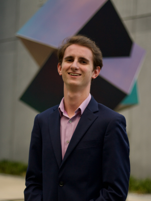
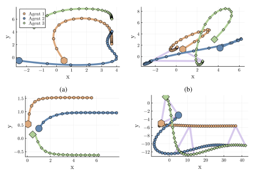
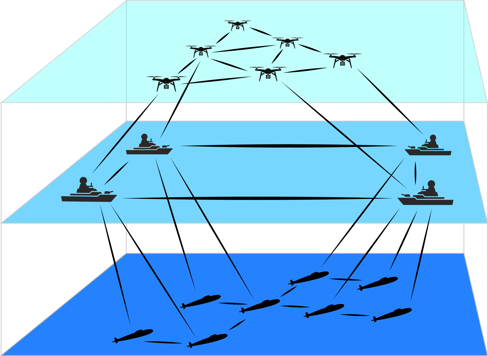

Hi, I'm Trevor Gross
I am a computer science student at the University of Florida, specializing in artificial intelligence, distributed systems, and their real-world applications. Welcome to my personal website!
Learn More
I am a computer science student at the University of Florida, specializing in artificial intelligence, distributed systems, and their real-world applications. Welcome to my personal website!
Learn More

I am a computer science student at the University of Florida with a focus on artificial intelligence. My academic journey reflects a strong passion for AI research, distributed systems, and their applications in solving real-world problems. I have hands-on experience with machine learning, data structures, operating systems, and large-scale computational resources like UF’s supercomputer, HiPerGator.
My research interests center on distributed optimization, multi-agent systems, and theoretical AI foundations. I am currently conducting research in the GATAS Lab at UF, focusing on distributed optimization using cellular sheaves. My long-term goal is to pursue a PhD in computer science and contribute to the advancement of AI through fundamental research.
Outside of academics, I enjoy rock climbing and strength training as ways to stay active and maintain balance in my life.
My research focuses on distributed optimization, multi-agent systems, and theoretical AI foundations. I am currently conducting undergraduate research in the GATAS Lab at UF, where I explore how complex systems can be broken into interconnected components that optimize locally while maintaining global coherence. This work has applications in networked decision-making, autonomous systems, and scalable AI architectures.
I am also preparing an application for the University Scholars Program (USP), a competitive UF initiative supporting undergraduate researchers. My goal is to highlight both my technical expertise and my ability to collaborate across disciplines.
Principal Investigator: Dr. James Fairbanks
Institution and Department: University of Florida, Mechanical and Aerospace Engineering
Affiliation Duration: 1 month
Research Focus: Journal expansion of the previous project. Computing additional numerical examples.
Responsibilities: Extending the numerical examples from the previous project to provide additional insights and results for journal publication.

Principal Investigator: Dr. James Fairbanks
Institution and Department: University of Florida, Mechanical and Aerospace Engineering
Affiliation Duration: 9 months
Research Focus: Developing distributed optimization routines for consensus optimization problems. Proposing the alternating direction method of multipliers in homological programming. Computing numerical examples in Julia for multi-agent model predictive control.
Responsibilities: Conducted research on distributed optimization routines, implemented numerical examples in Julia, and contributed to the development of theoretical frameworks for multi-agent model predictive control.
Paper: Distributed Multi-agent Coordination over Cellular Sheaves

The International Scholars Program (ISP) is a graduation medallion program at the University of Florida that helps UF undergraduate students develop international collaborative skills on a personal and professional level. ISP is open to all UF degree-seeking undergraduate students and can be customized to fit individual academic and career goals. Students who complete the ISP requirements will graduate with a global medallion and program certificate and will be more competitive for career opportunities after graduation.
These are my core NACE Competencies developed through ISP.
Throughout the completion of my German minor, I have completed a great number of language courses. In one specific course, German Language and Comprehension, we were tasked to complete a series of Lingua Meetings each week, where we spoke 1:1 with a native German speaker. These conversations were short but open-ended, allowing me to learn the natural flow of a German conversation, as opposed to the American English conversations to which I was accustomed. In turn, I became a much more confident German speaker in day-to-day conversations, bolstering my communication abilities.
During the 2023-24 school year, I served in the first-ever cohort of ISP Ambassadors, along with about 10 other undergraduate students. In my role, I helped plan the general ISP schedule for the year, promoted the program at tabling events, and guided graduating students through the creation of their ISP E-portfolios. On that last point, I led workshops to teach Wix and general web design advice, leveraging my personal experience as a computer science student. In total, I led almost 10 workshops, helping over 30 students graduate in the ISP program.
In the summer of 2023, I completed a study abroad in Leipzig, Germany, on the UF in Leipzig program. This was a 6-week German language program with 6 credits of coursework in a group of 15 intermediate and advanced German students. In addition to the coursework, we interacted with general German culture 24/7- ordering food at a restaurant, traveling on public transportation, and even volunteering at several German Non-Governmental Organizations (NGOs). This work with the NGOs was particularly immersive and engaging in global culture, where we spoke with the elderly and unhoused, working at a local public garden, and touring numerous museums across the country. I gained such a deep understanding of German culture, as this was my first international experience, and carry this in my daily life.
Another course that I completed, German in Business, was particularly engaging and impactful, specifically in a professional sense. We were assgígned several German news articles and videos on historical and current events, leveraging professional vocabulary and structure. In addition to this reading, we presented our findings each week to our classmates, developing our presentation abilities alongside our language. This has made me further confident in my German skills and provided a career-oriented outlet for my skills that I can implement in future job opportunities.
This is a discussion of the global experiences that mean the most to me or that most impacted me during my time at UF and abroad.
The European Union – its Evolving Role After the Russian Invasion of Ukraine (11/15/22, 3 - 4 pm):
This talk from the German Consul General shed light on the atrocities of the Russian invasion of Ukraine and how Germany, the EU, and NATO have responded to the crisis created. I had already been fairly well informed about the conflict and the broader geopolitical tensions surrounding it, which motivated me to attend the event in the first place. I wanted to hear directly from a diplomatic perspective and better understand how global institutions and allied nations are responding to such a significant international crisis. During the presentation, the Consul General outlined Germany’s evolving role in supporting Ukraine, the coordination efforts among European nations, and the broader strategic considerations facing NATO. What made the experience particularly striking was that, while the talk was taking place, news broke that Russian missiles had struck Poland. This development immediately shifted the tone of the discussion, as we began considering the potential consequences of such an escalation. We talked about possibilities such as NATO enforcing control of airspace or the potential invocation of Article 5, which would bring all NATO member states into direct conflict. Witnessing a real-time geopolitical development while hearing from a diplomatic representative made the situation feel far more immediate and tangible than simply reading about it in the news.
What I enjoyed most about participating in this activity was the opportunity to engage with complex international issues in a thoughtful, discussion-based setting. Hearing the perspective of someone directly involved in international diplomacy added nuance to my understanding of the conflict and the difficult decisions facing world leaders. While discussing global politics in such a serious context can be somewhat outside my comfort zone, the structured environment of the event and the willingness of others to ask questions and share ideas helped make the conversation approachable. The experience reinforced how interconnected global events are and how decisions made by nations can rapidly affect the broader international community. It also reminded me of the importance of staying informed and engaged with global issues. This is a difficult situation the world has been thrust into at Russian hands, but it is very important to support Ukraine however possible.
German Minor: My language journey began when I entered college intending to become proficient in at least one foreign language. I had taken Spanish throughout high school, but the quality of instruction left me discouraged and without a strong desire to continue learning it. Rather than abandoning language learning altogether, I began researching other languages and cultures to find one that was both personally meaningful and professionally useful. This search led me to German, a language connected to my heritage and a country that plays a major role in the development of technology and computer science, my field of study. After only one semester of German, I quickly developed a passion for the language and decided to pursue a German minor alongside my computer science degree.
My language skills have significantly shaped my experiences both in the United States and abroad. In the summer of 2023, I studied abroad in Leipzig, Germany, in a six-week intensive language program where I completed six credits of coursework alongside a small group of intermediate and advanced students. Outside the classroom, we practiced German constantly by ordering food, navigating public transportation, and interacting with residents. We also volunteered at several non-governmental organizations, including a public garden, a train station shelter for the unhoused, a senior recreation center, and organizations that support immigrants. These experiences allowed me to practice my language skills while also learning about the social and cultural structures of German society. Being immersed in the language helped me understand cultural norms, communication styles, and social values in a way that classroom learning alone never could.
One of the biggest challenges in my language learning journey was building confidence in speaking. Through weekly one-on-one Lingua meetings with native German speakers in one of my courses, I learned how conversations flow naturally in German rather than simply translating from English. Over time, these conversations made me far more comfortable speaking the language in everyday situations. This experience also changed the way I think about language and culture more broadly. It showed me that learning a language is not only about vocabulary and grammar but also about understanding how people communicate, think, and interact within their culture. Overall, my German studies have broadened my global perspective and inspired me to continue pursuing international experiences and intercultural connections throughout my academic and professional life.
MUL 2010 - Experiencing Music: During this course, I explored how music interacts with culture, identity, and global social issues. The class examined music not simply as entertainment but as a cultural expression shaped by political, social, and historical forces across the world. Throughout the semester, we studied how music reflects topics such as national identity, gender roles, conflict, and cultural exchange, analyzing examples from Western art music, popular music, and global traditions. One assignment that stood out to me focused on the Eurovision Song Contest, where I analyzed Ukraine’s 2022 winning song “Stefania” by Kalush Orchestra. Through that project, I examined how the song blended Ukrainian folk traditions with modern rap and how its themes of family and national identity resonated internationally during a time of political conflict. This project helped me see how music can act as both cultural storytelling and political expression on a global stage.
I was initially drawn to this course because I have always enjoyed music, but had rarely considered its deeper cultural and social significance. As a computer science major, most of my coursework focuses on technical problem-solving, so I was interested in a class that explored creativity and culture from a humanities perspective. The course ultimately expanded my worldview by showing how music reflects societal values and struggles in different regions of the world. For example, analyzing songs like No Doubt’s “Just a Girl” helped me understand how music can challenge gender norms and highlight broader social inequalities. Studying these themes made me realize how artistic expression can shape conversations about identity and power.
The international aspects of the course also connected closely with experiences I have had outside the classroom, particularly my study abroad program in Leipzig, Germany. During that time, I was immersed in another culture and saw firsthand how music and art are integrated into everyday life. Assignments that focused on cultural listening and musical identity helped me better interpret the music I encountered abroad and understand the social context behind it.
One project I am especially proud of was my analytical essay on “Just a Girl,” where I examined how the song’s musical structure, lyrics, and performance convey feminist themes and challenge traditional gender expectations in rock music. That assignment required me to combine technical musical analysis with cultural interpretation, which reflected the central goal of the course: understanding music as a social and global experience.
My experience in the International Scholars Program reshaped the way I think about language, culture, and global interconnectedness. Before participating in ISP, I often thought about international learning primarily through the lens of language acquisition or travel. Over time, however, I began to recognize that global understanding involves far more than learning vocabulary or visiting another country. It requires examining how historical events, cultural perspectives, and technological systems interact to shape communication between people and societies. Through coursework, campus programming, and intercultural engagement, I developed the ability to interpret global issues more critically and communicate more thoughtfully across cultural boundaries.
One of the most significant insights from my ISP experience came from examining how language, history, and technology intersect in modern society. In several courses and campus discussions, I encountered questions about how language influences the way people access information and participate in global conversations. In my course on language and computers, for example, we explored how artificial intelligence systems attempt to process human language and why these technologies only support a small portion of the world’s languages. This discussion challenged my previous assumption that technological systems are inherently neutral. Instead, I began to see how decisions about data, encoding standards, and computational resources shape who benefits from technological progress. These ideas became even more meaningful when considered alongside my language studies, where I regularly observed the complexity and nuance that exist within even a single language. Together, these experiences reinforced the importance of designing technologies that recognize linguistic and cultural diversity.
Campus events and cultural programming further expanded my understanding of the global forces that influence communication and identity. Several discussions and presentations within the German program examined the historical circumstances surrounding the rise of extremism in twentieth century Europe and the ways in which cultural institutions responded to political change. These conversations demonstrated how narratives about national identity and cultural belonging can influence public perception and social behavior. At the same time, they highlighted the role of individuals who challenged dominant systems and encouraged critical thinking within their communities. Reflecting on these themes strengthened my ability to connect historical developments with present day discussions about misinformation, civic responsibility, and social resilience.
Another important dimension of my ISP experience was recognizing how cultural expression reflects broader social change. Presentations on German film and media illustrated how artistic works can both respond to and shape the political environments in which they are produced. Learning about the personal decisions made by filmmakers and actors during periods of political upheaval revealed the difficult choices individuals often face when navigating complex cultural and ethical landscapes. These conversations reinforced the idea that cultural artifacts such as films, literature, and art are not simply entertainment. They also serve as historical documents that reflect the tensions, values, and debates of a particular time and place.
Serving as an ISP Ambassador was one of the most meaningful parts of my experience in the program. As a member of the inaugural ambassador cohort, I had the opportunity to help shape how the program engaged with students across campus. Our team supported outreach efforts, organized informational events, and worked closely with graduating scholars as they prepared their final portfolios. One of my primary contributions was leading workshops that introduced students to website design tools and helped them build their ePortfolios. Drawing on my background in computer science, I provided practical guidance on structuring pages, presenting written reflections, and translating personal experiences into clear digital narratives. Across nearly ten workshops, I worked with more than thirty students as they refined the way they communicated their global learning journeys. This role strengthened my leadership and communication skills while also reinforcing the collaborative spirit of the ISP community. It was particularly rewarding to help other students recognize the significance of their international experiences and articulate the insights they gained from them.
Throughout the program, I also encountered challenges that required adaptability and persistence. Engaging deeply with unfamiliar cultural perspectives sometimes required reconsidering assumptions that I previously held about history, technology, and communication. These moments of discomfort ultimately became valuable opportunities for growth because they encouraged reflection rather than simple observation. By approaching these challenges with curiosity and openness, I developed greater confidence in navigating conversations that involve differing viewpoints or complex historical contexts.
Overall, the International Scholars Program strengthened my ability to think critically about the global systems that influence communication, culture, and technology. The program encouraged me to connect my academic interests in computer science with broader questions about language accessibility, cultural understanding, and ethical responsibility. As I move forward in my academic and professional career, these experiences will continue to influence how I approach the design and evaluation of technological systems that affect people around the world. More importantly, ISP reinforced the importance of listening to diverse perspectives and recognizing the interconnected nature of global communities. By combining technical expertise with intercultural awareness, I hope to contribute to work that supports more inclusive communication and collaboration across cultures.
Major: Computer Science (B.S.)
Minor: German
Certificates: AI Fundamentals and Engineering Innovation
Relevant Coursework:
I have gained practical industry experience through multiple internships. In Summer 2025, I will be a Software Development Engineering Intern at Amazon in Austin, TX, through the Amazon Propel Program (APP). There, I will work on large-scale backend systems, focusing on building robust, scalable solutions for real-world challenges.
I have also worked on projects involving secure TCP networking, backend development, and system integration, which deepened my skills in systems programming and applied computer science. Additionally, I participated in Innovating for Defense (I4D), a prestigious course offered in collaboration with the U.S. Department of Defense (DoD), where I contributed to the Base Integrated Mesh Management System (BIMMS) project for the USAF 96th Test Wing.
I currently serve as Vice President of the Florida Engineering Society (FES) student chapter at UF, where I have significantly expanded mentorship and networking opportunities for engineering students. Under my leadership, attendance at the chapter’s mentorship program increased by over 150%, and the number of major networking events doubled.
I have also organized high-impact events such as “Networking Nights,” connecting Mechanical and Aerospace Engineering (MAE) students with industry professionals. These experiences have honed my skills in event planning, outreach, and organizational leadership.
Below, you can find my resume and CV. Feel free to preview them online or download them for your reference.